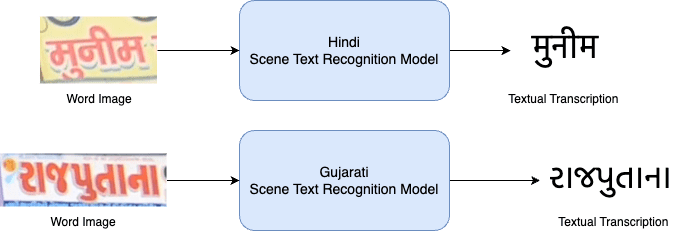

Specific Challenge Task
In line with the goal of achieving accuracy in scene text recognition across diverse languages, this competition targets nearly all Indian languages. These languages constituting approximately 17% of the world’s population, share syntactic and semantic similarities and serve as crucial means of communication. For the challenge, we propose following main task (see Fig. 1).

The challenge comprises only one task (Fig. 1) - cropped word image recognition. The participants have to predict the text in all the cropped word images of the test set in a total of 10 targeted Indian languages.
Evaluation Metrics
In scene text recognition, the predicted text string is compared directly to the ground truth. Performance is assessed at both the character level, determining the number of correctly recognized characters, and the word level, evaluating if the predicted word matches the ground truth exactly.
Recognizing the significance of both metrics in capturing varying levels of insight into the model’s performance, the evaluation metric for the task will be Recognition Accuracy (WRA) at the word level and \(1−NED\) at the character level. A prediction will be considered correct only if all characters at every position match
$$ { WRR= \frac{W_r}{W} (1) } $$
Where \(W\) is the total number of words, and \(W_r\) represents number of correctly
recognized words.
At character level, the evaluation metric will be \(1−NED\) , where \(NED\) stands
for normalized edit distance.
$$ { NED = \frac{1}{N} \sum_{i=1}^{N} \frac{D(s_i, \hat{s_i})}{\max{(l_i, \hat{l_i})}} (2) } $$
\(D(.)\) represents the Levenshtein distance. \(s_i\) and \(\hat{s_i}\) denote the predicted text and the corresponding ground truth, respectively. Furthermore, \(l_i\) and \(\hat{l_i}\) denote their respective text lengths. \(N\) is the total number of word-samples. The Normalized Edit Distance \(\text{NED}\) protocol measures mismatching between the predicted text and the corresponding ground truth. Therefore, the recognition score is usually calculated as \(1 -\text{NED}\).
We will assess models and rank them based on WRA and \(1 − NED\) individually, awarding them accordingly for each metric.